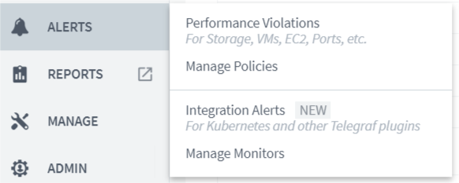
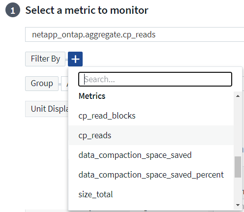
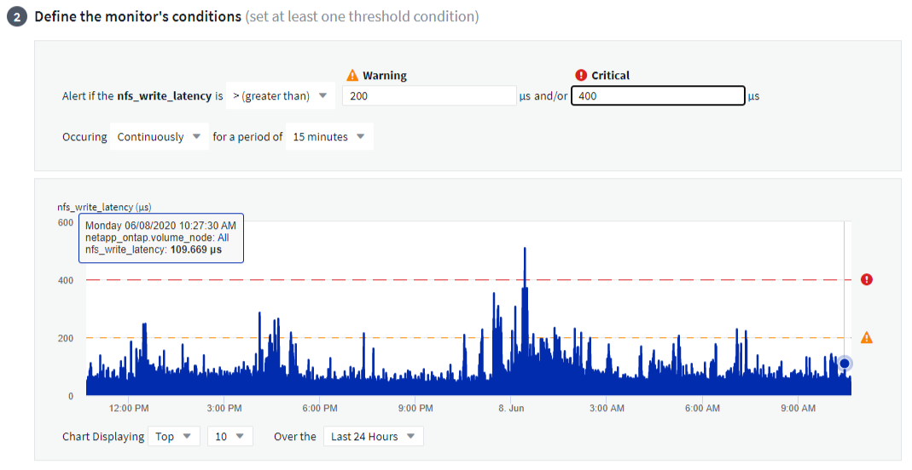
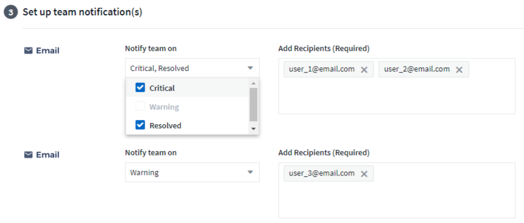
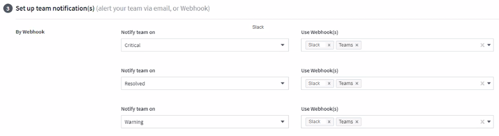
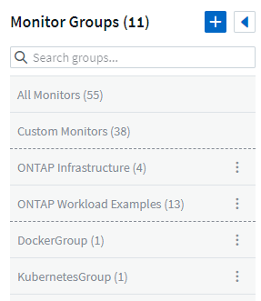

Alerting with Monitors
Contributors
 Download PDF of this page
Download PDF of this page
You create monitors to set thresholds that trigger alerts to notify you about issues related to the resources in your network. For example, you can create a monitor to alert for node write latency for any of a multitude of protocols.
| Monitors and Alerting is available in Cloud Insights Standard Edition and higher. |
When the monitored threshold and conditions are reached or exceeded, Cloud Insights creates an alert. A Monitor can have a Warning threshold, a Critical threshold, or both.
Monitor or Performance Policy?
What’s the difference between a Performance Policy and a Monitor?
Policies allow you to set thresholds on "infrastructure" objects such as storage, VM, EC2, and ports. These policies trigger violations when thresholds are met or exceeded. Each violation can be investigated for troubleshooting. Policies are described in detail elsewhere in this documentation.
Monitors provide similar functionality for "integration" data such as those collected for Kubernetes, ONTAP advanced metrics, and Telegraf plugins, and alert when thresholds are crossed. With Monitors, you can set thresholds for Warning- or Critical-level alerts, or both.
Policies and Monitors are available under the Alerts menu.

Emails can be sent when a policy or monitor is triggered.
Creating a Monitor
In the example below, we will create a Monitor to give a Warning alert when Volume Node NFS Write Latency reaches or exceeds 200ms, and a Critical alert when it reaches or exceeds 400ms. We only want to be alerted when either threshold is exceeded for at least 15 continuous minutes.
Requirements
-
Cloud Insights must be configured to collect integration data, and that data is being collected.
Create the Monitor
-
From the Cloud Insights menu, click Alerts > Manage Monitors
The Monitors list page is displayed, showing currently configured monitors.
-
To add a monitor, Click + Monitor. To modify an existing monitor, click the monitor name in the list.
The Monitor Configuration dialog is displayed.
-
In the drop-down, search for and choose an object type and metric to monitor, for example netapp_ontap_volume_node_nfs_write_latency.
You can set filters to narrow down which object attributes or metrics to monitor.

When working with integration data (Kubernetes, ONTAP Advanced Data, etc.), metric filtering removes the individual/unmatched data points from the plotted data series, unlike infrastructure data (storage, VM, ports etc.) where filters work on the aggregated value of the data series and potentially remove the entire object from the chart.
| To create a multi-condition monitor (e.g., IOPS > X and latency > Y), define the first condition as a threshold and the second condition as a filter. |
Define the Conditions of the Monitor.
-
After choosing the object and metric to monitor, set the Warning-level and/or Critical-level thresholds.
-
For the Warning level, enter 200. The dashed line indicating this Warning level displays in the example graph.
-
For the Critical level, enter 400. The dashed line indicating this Critical level displays in the example graph.
The graph displays historical data. The Warning and Critical level lines on the graph are a visual representation of the Monitor, so you can easily see when the Monitor might trigger an alert in each case.
-
For the occurence interval, choose Continuously for a period of 15 Minutes.
You can choose to trigger an alert the moment a threshold is breached, or wait until the threshold has been in continuous breach for a period of time. In our example, we do not want to be alerted every time the Total IOPS peaks above the Warning or Critical level, but only when a monitored object continuously exceeds one of these levels for at least 15 minutes.

Setting Corrective Actions or Additional Information
You can add an optional description as well as additional insights and/or corrective actions by filling in the Add an Alert Description section. The description can be up to 1024 characters and will be sent with the alert. The insights/corrective action field can be up to 67,000 characters and will be displayed in the summary section of the alert landing page.
In these fields you can provide notes, links, or steps to take to correct or otherwise address the alert.

Select notification type and recipients
In the Set up team notification(s) section, you can choose whether to alert your team via email or Webhook.

Alerting via Email:
Specify the email recipients for alert notifications. If desired, you can choose different recipients for warning or critical alerts.

Alerting via Webhook:
Specify the webhook(s) for alert notifications. If desired, you can choose different webhooks for warning or critical alerts.

| Webhooks is considered a Preview feature and is therefore subject to change. |
Save your Monitor
-
If desired, you can add a description of the monitor.
-
Give the Monitor a meaningful name and click Save.
Your new monitor is added to the list of active Monitors.
Monitor List
The Monitor page lists the currently configured monitors, showing the following:
-
Monitor Name
-
Status
-
Object/metric being monitored
-
Conditions of the Monitor
You can choose to temporarily suspend monitoring of an object type by clicking the menu to the right of the monitor and selecting Pause. When you are ready to resume monitoring, click Resume.
You can copy a monitor by selecting Duplicate from the menu. You can then modify the new monitor and change the object/metric, filter, conditions, email recipients, etc.
If a monitor is no longer needed, you can delete it by selecting Delete from the menu.
Monitor Groups and System-Defined Monitors
Grouping allows you to view and manage related monitors. For example, you can have a monitor group dedicated to the storage in your environment, or monitors relevant to a certain recipient list.

Monitors are grouped in the following categories:
-
All Monitors: All monitors, both user-created and system-defined
-
Custom Monitors: Includes user-created monitors
-
System Monitor groups: These groups include system-defined monitors, which are based on the data collectors in your environment
-
User-Created Monitor groups: These are monitor groups you create
The number of monitors contained in a group is shown next to the group name.
| Custom monitors can be paused, resumed, deleted, or moved to another group. System-defined monitors can be paused and resumed but can not be deleted or moved. |
System-Defined Monitors
System-defined monitors are comprised of pre-defined metrics and conditions, as well as default descriptions and corrective actions, which can not be modified. You can modify the notification recipient list for system-defined monitors. To view the metrics, conditions, description and corrective actions, or to modify the recipient list, open a system-defined monitor group and click the monitor name in the list.
System-defined monitor groups cannot be modified or removed.
The following system-defined monitors are available, in the noted groups.
-
ONTAP Infrastructure includes monitors for infrastructure-related issues in ONTAP clusters.
-
ONTAP Workload Examples includes monitors for workload-related issues.
-
Monitors in both group default to Paused state.
| Group | Monitor Name | Monitor Description |
|---|---|---|
ONTAP Infrastructure |
Storage Capacity Limit |
When a storage pool (aggregate) fills up, I/O operations slow down and finally cease causing a storage outage incident. A warning alert indicates that planned action should be taken soon to restore minimum free space. A critical alert indicates that service disruption is imminent and emergency measures should be taken to free up space to ensure service continuity. |
ONTAP Infrastructure |
Storage Performance Limit |
When a storage pool reaches its performance limit, operations slow down, latency goes up and workloads and applications may start failing. ONTAP evaluates the storage pool utilization due to workloads and estimates what percent of performance has been consumed. A warning alert indicates that planned action should be taken to reduce storage pool load as there may not be enough storage pool performance left to service workload peaks. A critical alert indicates that a performance brownout is imminent and emergency measures should be taken to reduce storage pool load to ensure service continuity. |
ONTAP Infrastructure |
Fiber Channel Port High Utilization |
Fiber Channel Protocol ports are used to receive and transfer the SAN traffic between the customer host system and the ONTAP LUNs. If the port utilization is high, then it will become a bottleneck and it will ultimately affect the performance of Fiber Channel Protocol workloads. A warning alert indicates that planned action should be taken to balance network traffic. A critical alert indicates that service disruption is imminent and emergency measures should be taken to balance network traffic to ensure service continuity. |
ONTAP Infrastructure |
Network Port High Utilization |
Network ports are used to receive and transfer the NFS, CIFS, and iSCSI protocol traffic between the customer host systems and the ONTAP volumes. If the port utilization is high then it becomes a bottleneck and it ultimately affects the performance of NFS, CIFS, and iSCSI workloads. A warning alert indicates that planned action should be taken to balance network traffic. A critical alert indicates that service disruption is imminent and emergency measures should be taken to balance network traffic to ensure service continuity. |
ONTAP Workload Examples |
Volume Inodes Limit |
Volumes that store files use index nodes (inode) to store file metadata. When a volume exhausts its inode allocation, no more files can be added to it. A warning alert indicates that planned action should be taken to increase the number of available inodes. A critical alert indicates that file limit exhaustion is imminent and emergency measures should be taken to free up inodes to ensure service continuity. |
ONTAP Workload Examples |
QTree Capacity is Full |
A qtree is a logically defined file system that can exist as a special subdirectory of the root directory within a volume. Each qtree has a default space quota or a quota defined by a quota policy to limit amount of data stored in the tree within the volume capacity. A warning alert indicates that planned action should be taken to increase the space. A critical alert indicates that service disruption is imminent and emergency measures should be taken to free up space to ensure service continuity. |
ONTAP Workload Examples |
Lun High Latency |
LUNs are objects that serve the IO traffic often driven by performance sensitive applications such as databases. High LUN latencies means that the applications themselves may suffer and be unable to accomplish their tasks. A warning alert indicates that planned action should be taken to move the LUN to appropriate Node or Aggregate. A critical alert indicates that service disruption is imminent and emergency measures should be taken to ensure service continuity. The following are expected latencies based on media type - SSD up to 1-2 milliseconds; SAS up to 8-10 milliseconds and SATA HDD 17-20 milliseconds |
ONTAP Workload Examples |
NVMe Namespace High Latency |
NVMe Namespaces are objects that serve the IO traffic often driven by performance sensitive applications such as databases. High NVMe Namespaces latencies means that the applications themselves may suffer and be unable to accomplish their tasks. A warning alert indicates that planned action should be taken to move the LUN to appropriate Node or Aggregate. A critical alert indicates that service disruption is imminent and emergency measures should be taken to ensure service continuity. |
ONTAP Workload Examples |
Qtree Files Soft Limit |
A qtree is a logically defined file system that can exist as a special subdirectory of the root directory within a volume. Each qtree has a quota of the number of files that it can contain in order to maintain a manageable file system size within the volume. A qtree maintains a soft file number quota in order to be able to alert the user proactively before reaching the limit of files in the qtree and being unable to store any additional files. Monitoring the number of files within a qtree ensures that the user receives uninterrupted data service. |
ONTAP Workload Examples |
Qtree Files Hard Limit |
A qtree is a logically defined file system that can exist as a special subdirectory of the root directory within a volume. Each qtree has a quota of the number of files that it can contain in order to maintain a manageable file system size within the volume. A qtree maintains a hard file number quota beyond which new files in the tree are denied. Monitoring the number of files within a qtree ensures that the user receives uninterrupted data service. |
ONTAP Workload Examples |
QTree Capacity Soft Limit |
A qtree is a logically defined file system that can exist as a special subdirectory of the root directory within a volume. Each qtree has a space quota measured in KBytes that it can use to store data in order to control the growth of user data in volume and not exceed its total capacity. A qtree maintains a soft storage capacity quota in order to be able to alert the user proactively before reaching the total capacity quota limit in the qtree and being unable to store data anymore. Monitoring the amount of data stored within a qtree ensures that the user receives uninterrupted data service. |
ONTAP Workload Examples |
QTree Capacity Hard Limit |
A qtree is a logically defined file system that can exist as a special subdirectory of the root directory within a volume. Each qtree has a space quota measured in KBytes that it can use to store data in order to control the growth of user data in volume and not exceed its total capacity. A qtree hard storage capacity quota serves as a threshold beyond which the writes on the qtree are denied. Monitoring the amount of data stored within a qtree ensures that the user receives uninterrupted data service. |
ONTAP Workload Examples |
User Quota Capacity Soft Limit |
ONTAP recognize the users of Unix or Windows systems that have the rights to access volumes, files or directories within a volume. As a result, ONTAP allows the customers to configure storage capacity for their users or groups of users of their Linux or Windows systems. The user or group policy quota limits the amount of space the user can utilize for their own data. A soft limit of this quota allows proactive notification of the user when the amount of capacity used within the volume is reaching the total capacity quota. Monitoring the amount of data stored within a user or group quota ensures that the user receives uninterrupted data service. |
ONTAP Workload Examples |
User Quota Capacity Hard Limit |
ONTAP recognize the users of Unix or Windows systems that have the rights to access volumes, files or directories within a volume. As a result, ONTAP allows the customers to configure storage capacity for their users or groups of users of their Linux or Windows systems. The user or group policy quota limits the amount of space the user can utilize for their own data. A hard limit of this quota allows notification of the user when the amount of capacity used within the volume is right before reaching the total capacity quota. Monitoring the amount of data stored within a user or group quota ensures that the user receives uninterrupted data service. |
ONTAP Workload Examples |
Volume High Latency |
Volumes are objects that serve the IO traffic often driven by performance sensitive applications including devOps applications, home directories, and databases. High volume latencies means that the applications themselves may suffer and be unable to accomplish their tasks. Monitoring volume latencies is critical to maintain application consistent performance. The following are expected latencies based on media type - SSD up to 1-2 milliseconds; SAS up to 8-10 milliseconds and SATA HDD 17-20 milliseconds |
ONTAP Workload Examples |
Snapshot Reserve Capacity is Full |
Storage capacity of a volume is necessary to store application and customer data. A portion of that space, called snapshot reserved space, is used to store snapshots which allow data to be protected locally. The more new and updated data stored in the ONTAP volume the more snapshot capacity is used and less snapshot storage capacity will be available for future new or updated data. If the snapshot data capacity within a volume reaches the total snapshot reserve space it may lead to the customer being unable to store new snapshot data and reduction in the level of protection for the data in the volume. Monitoring the volume used snapshot capacity ensures data services continuity. |
ONTAP Workload Examples |
Volume Capacity is Full |
Storage capacity of a volume is necessary to store application and customer data. The more data stored in the ONTAP volume the less storage availability for future data. If the data storage capacity within a volume reaches the total storage capacity may lead to the customer being unable to store data due to lack of storage capacity. Monitoring the volume used storage capacity ensures data services continuity. |
Custom Monitor Groups
To create a new custom monitor group, click the "+" Create New Monitor Group button. Enter a name for the group and click Create Group. An empty group is created with that name.
To add monitors to the group, go to the All Monitors group (recommended) and do one of the following:
-
To add a single monitor, click the menu to the right of the monitor and select Add to Group. Choose the group to which to add the monitor.
-
Click on the monitor name to open the monitor’s edit view, and select a group in the Associate to a monitor group section.

Remove monitors by clicking on a group and selecting Remove from Group from the menu. You can not remove monitors from the All Monitors or Custom Monitors group. To delete a monitor from these groups, you must delete the monitor itself.
| Removing a monitor from a group does not delete the monitor from Cloud Insights. To completely remove a monitor, select the monitor and click Delete. This also removes it from the group to which it belonged and it is no longer available to any user. |
You can also move a monitor to a different group in the same manner, selecting Move to Group.
| Each monitor can belong to only a single group at any given time. |
To pause or resume all monitors in a group at once, select the menu for the group and click Pause or Resume.
Use the same menu to rename or delete a group. Deleting a group does not delete the monitors from Cloud Insights; they are still available in All Monitors.

 Edit on GitHub
Edit on GitHub